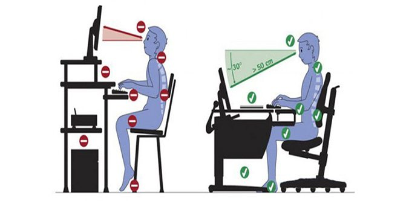

↑
Du er her
Ergonomi
Ergonomi er læra om korleis vi på best måte kan tilpasse arbeidsoppgåvene og arbeidsmiljøet til mennesket.
Dårlege ergonomiske tilhøve er ein av dei balegaste årsakene till sjukdom og fråvær.
Dersom vi utset kroppen for langvarig og einsidig belastning, kan vi få belastningslidingar.
Belastingslidingar er ein tilstand der ein har varige smerter i bevegelseapparatet.
Årsaka kan vere at arbeidet er for tungt, for einsformig, går føre seg i uheldige arbeidsstillingar eller barer for lenge.
Oppsetting av utstyr og pauser
Sitte:
90 grader i albuen og kne - fot skal være planta på golvet
Trekk skuldrane bak og legg dei litt framover til dei fell på plass
Unngå knekk i nakken
Skjerm:
Korrekt synsvinkel: 15-30 grader nedover
50 - 70cm avstand
Ikkje for skarp kontrast på skjermen
Lys:
Dagslys og opplys
Innlys frå venstre side
Stol:
Høg i forhold til pult
Justerbar, i alle retningar - rygg, sete, høgd, armlener osv.
Støtte i korsryggen
Den må kunnes tilpasset
Bord:
Justerbart
Passe til den som skal bruke den til å arbeide
Stort nok
Pause:
Mikropausar
Bevegelse
Bytte mellom arbeidsstillingar
Kan gjøre øvelser i blant for å løyse opp visse kroppsdelar
Video: ↓
